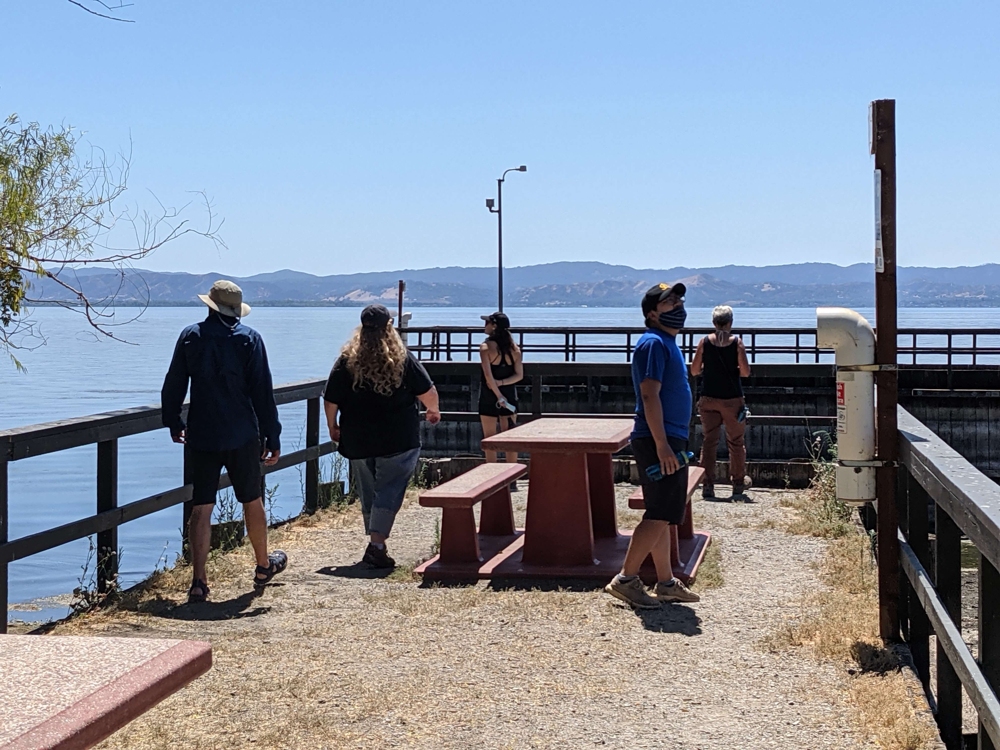
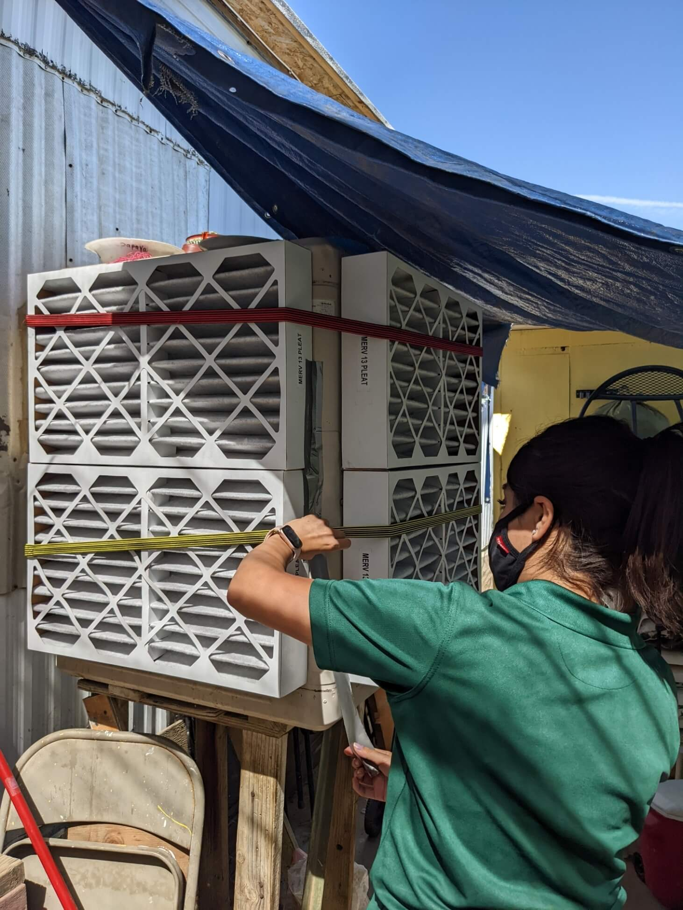
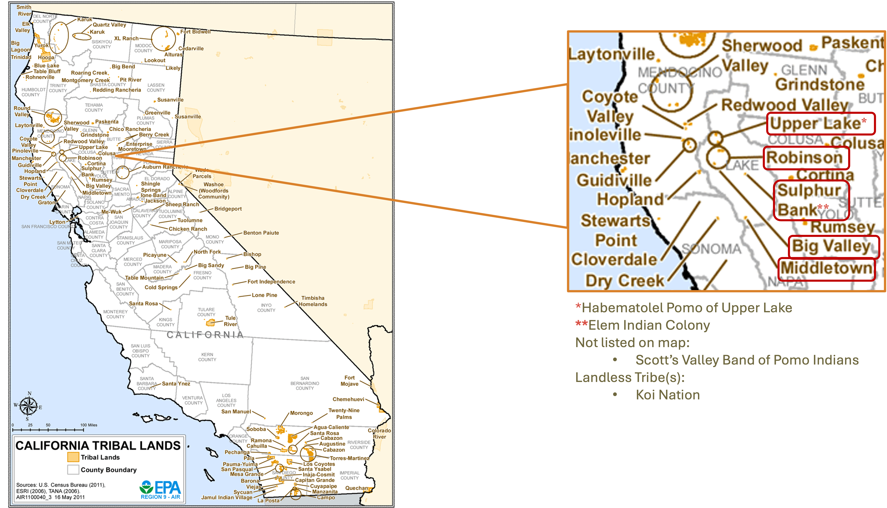
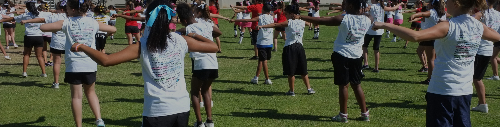
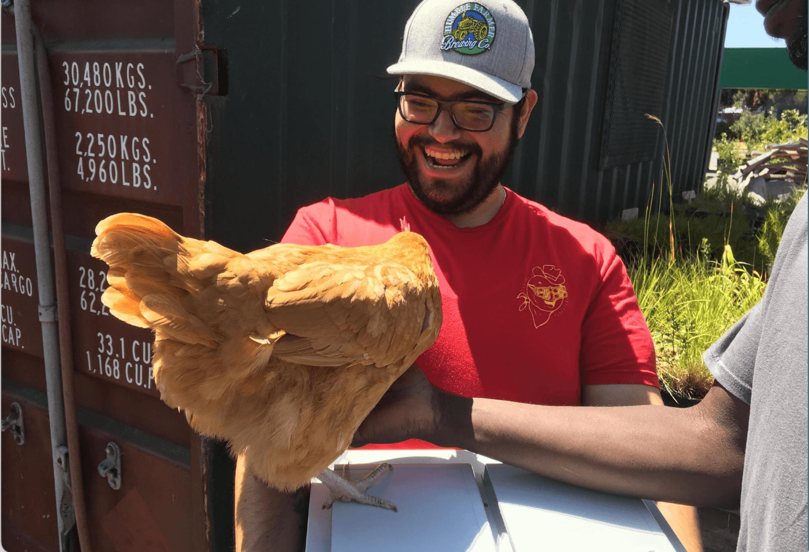

Monitoring
Community air monitoring
Residents run low-cost sensors to capture neighborhood-level air quality where official monitors don't reach.
Why this hub exists
Our community partnerships used to live scattered across individual project pages. This hub brings the partnerships, trainings, advocacy support, and community stories together.
Programs & initiatives
Programs built with the people most affected by environmental and health hazards.

Residents run low-cost sensors to capture neighborhood-level air quality where official monitors don't reach.
Community-led reporting networks let residents log pollution incidents and route them to agencies that can act.

Workshops and toolkits that help residents read, question, and use public health data.

We help partners turn evidence into testimony and comment letters for policy change.

Communities shape the research questions from the start, so the data reflects what they actually need to know.

Paid fellowships that train community scientists and environmental-justice leaders.
Our partners
Community-based organizations, clinics, school districts, and local advocates.


Community voices

A coalition of parents and clinic staff used community-collected data to push for cleaner air near schools.
If you are a community group, clinic, or local agency with a question the data might answer, get in touch.